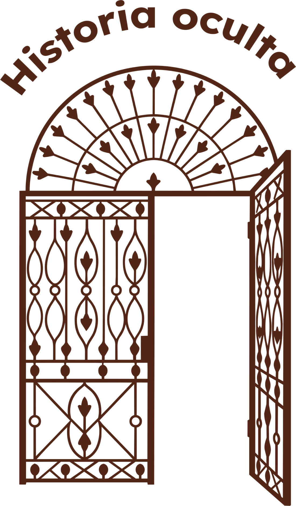
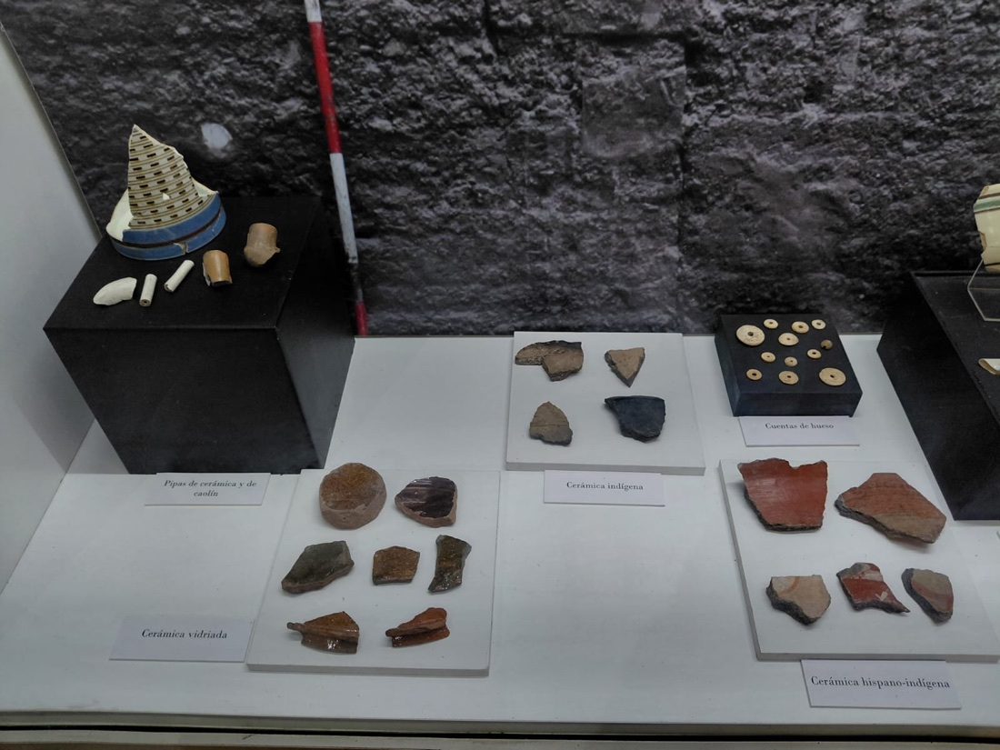

MUSEO ETNOGRÁFICO
Y COLONIAL
«JUAN DE GARAY»


NUESTRA SEDE HISTÓRICA
El museo funciona en una casona de estilo colonial, un testimonio arquitectónico único en la ciudad. Construida en el siglo XVIII, sus muros y patios han sido cuidadosamente preservados para albergar nuestras colecciones, ofreciendo el entorno perfecto para sumergirse en la atmósfera de la época.
CASA DEL BRIGADIER
ESTANISLAO LÓPEZ

Construida a fines del siglo XVIII por la familia Diez de Andino y habitada por el Brigadier Estanislao López entre 1819 y 1838, esta casona es uno de los exponentes más valiosos de la arquitectura colonial en el Paseo de las Tres Culturas.
ESTANISLAO LÓPEZ

El Brigadier Estanislao López (1786-1838) fue un militar y político argentino, gobernador de Santa Fe durante casi veinte años. Defendió la autonomía provincial y el federalismo, convirtiéndose en una figura fundamental de la historia santafesina.
HISTORIA OCULTA

Las casas también guardan historias bajo sus pisos. En la Casa del Brigadier, cada objeto recuperado nos acerca a las costumbres y la vida cotidiana de quienes habitaron el lugar.
A través de la arqueología, estos pequeños restos se convierten en pistas que permiten reconstruir parte de una historia que permaneció oculta durante siglos.


MOCHAWARE
¿Qué es? Cerámica inglesa de fines del siglo XVIII, con diseños que parecen raíces o helechos.
¿Para qué servía? Para vajilla de todos los días: jarras, tazas y cuencos.
CERÁMICA HISPANO-INDÍGENA
¿Qué es? Cerámica que mezclaba técnicas indígenas y españolas.
¿Para qué servía? Para cocinar, guardar y transportar alimentos y líquidos.
CUENTAS DE HUESO
¿Qué es? Piezas pequeñas de hueso de animal, perforadas para unirlas con hilo.
¿Para qué servía? Para hacer collares y pulseras, quizás con fines decorativos o simbólicos.
MAYÓLICA EUROPEA
¿Qué es? Cerámica con esmalte blanco opaco, decorada con dibujos y colores.
¿Para qué servía? Para platos, fuentes y azulejos, tanto de uso diario como decorativos.
¿CÓMO JUGAR?
DESCUBRÍ OTROS OBJETOS
- Encontrá en la grilla las 8 palabras clave de las piezas arqueológicas.
- Tocá cualquier nombre de la lista para abrir su ficha técnica con fotos HD e historia.
- Girá la tarjeta para comprobar las soluciones.

MAYÓLICA DE ALCORA
¿Qué es? Cerámica fina europea recubierta con un esmalte blanco brillante y decorada con acabados de gran calidad.
¿Para qué servía? Para la vajilla de mesa (platos y fuentes) en los hogares de mayor poder adquisitivo de la ciudad.

BOTONES Y ALFILERES DE METAL
¿Qué es? Pequeños elementos de confección elaborados en bronce, hierro o plata.
¿Para qué servía? Para abrochar, ajustar y sujetar las distintas prendas de vestir coloniales.

BOQUILLAS Y HORNILLOS DE PIPA DE CAOLÍN
¿Qué es? Pipas delgadas importadas de Europa hechas con una arcilla blanca muy fina llamada caolín.
¿Para qué servía? Para fumar tabaco europeo de forma más limpia, siendo un objeto de consumo suntuario.

HORNILLOS DE PIPAS DE CERÁMICA
¿Qué es? Cazoletas de barro cocido fabricadas localmente por alfareros indígenas, africanos y criollos.
¿Para qué servía? Para contener el tabaco que se fumaba socialmente durante las reuniones y momentos de descanso en la casa.
En el Museo Etnográfico y Colonial Juan de Garay aprendemos juntos.
Nuestro equipo educativo propone actividades para conocer la historia de Santa Fe, de los pueblos originarios y de la época colonial, de una manera cercana y para todas las edades.
INSTITUCIONES EDUCATIVAS
Propuestas pensadas para cada nivel educativo, para aprender a través de la experiencia y el patrimonio.
PÚBLICO GENERAL
Te invitamos a recorrer el museo junto al equipo educativo para conocer su patrimonio y su historia.
Te esperamos en el Museo Etnográfico y Colonial Juan de Garay para recorrer la historia de Santa Fe. Podés venir solo, con amigos, en familia o con tu escuela.
UBICACIÓN
Paseo de las Tres Culturas
25 de Mayo 1470, S3000FJL Santa Fe de la Vera Cruz, Santa Fe